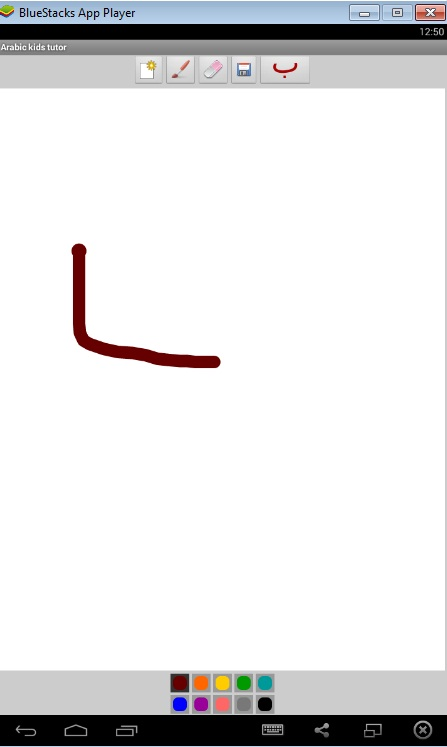
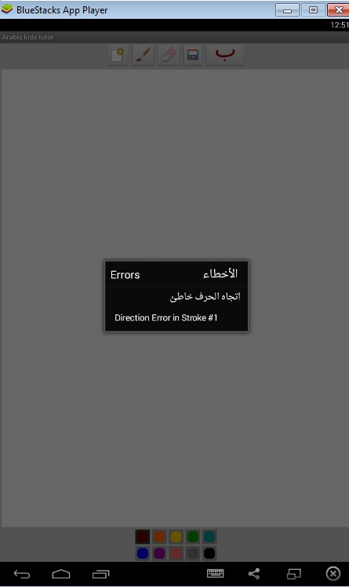
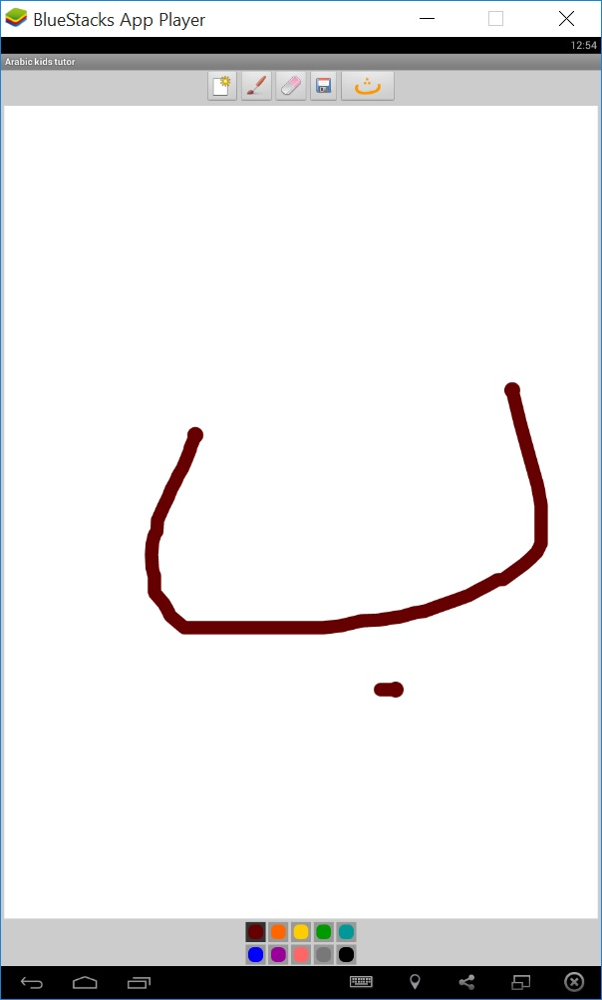
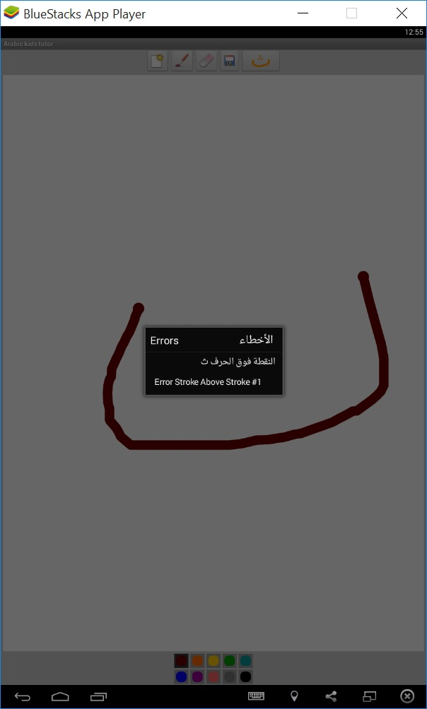
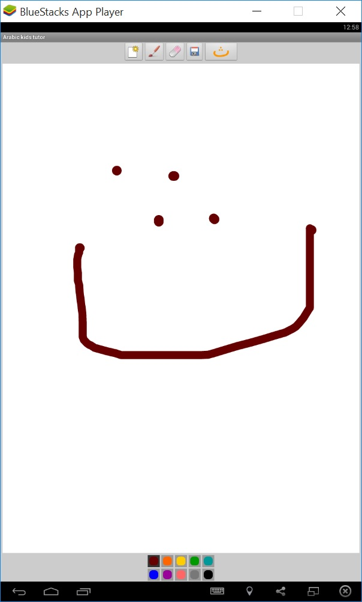
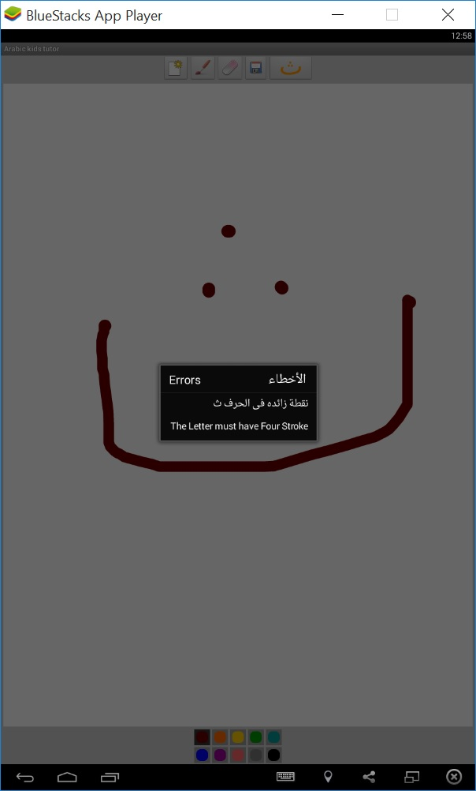
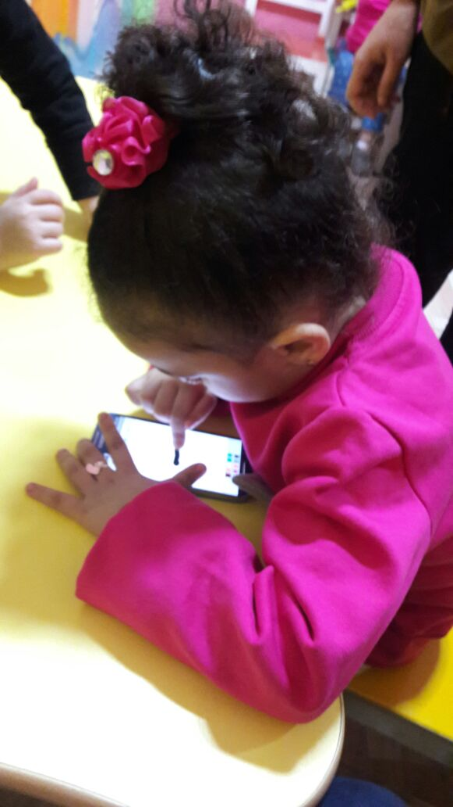
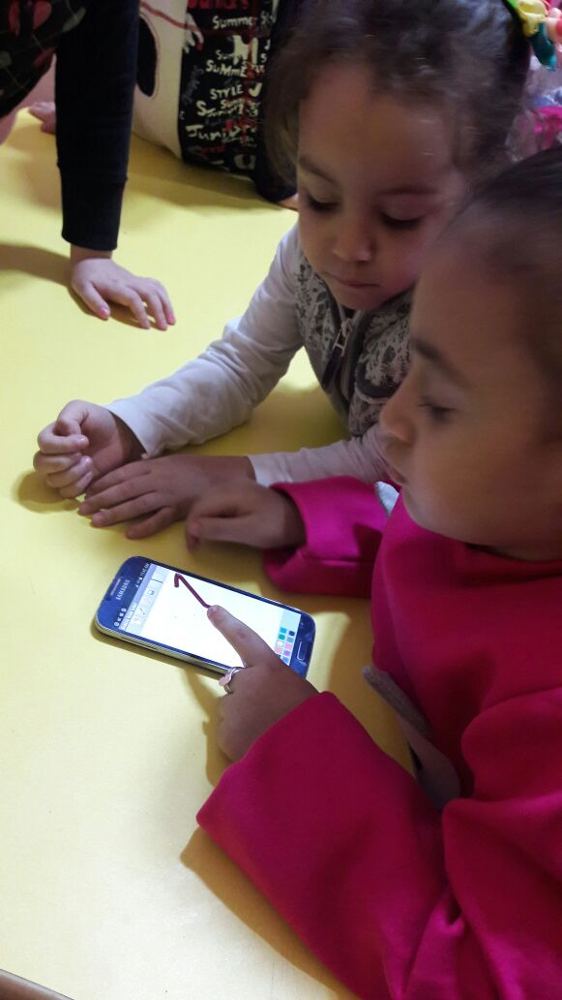
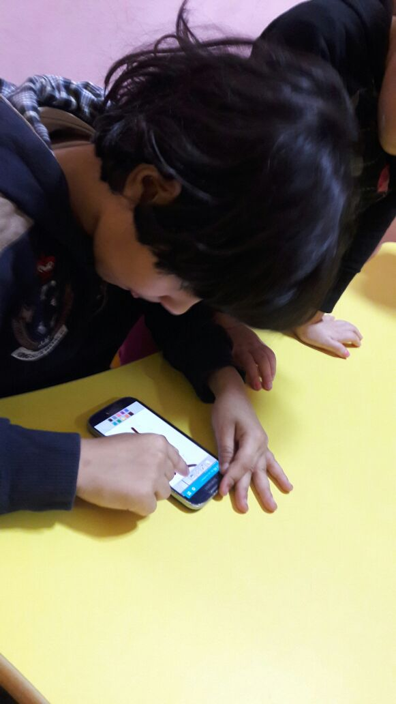
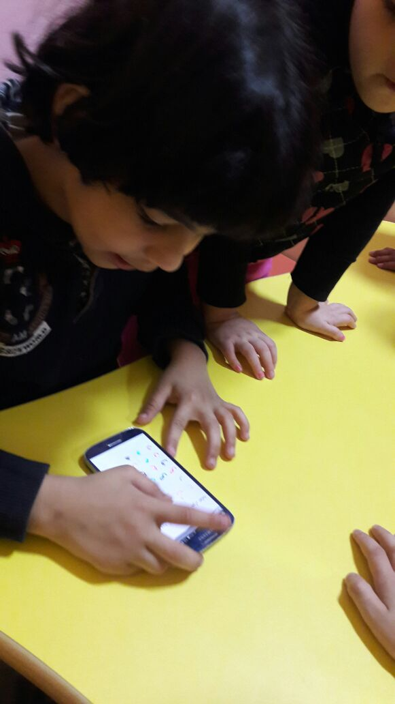

A Pen Based Intelligent System for Educating Arabic Handwriting
Abstract
The main objective of this thesis is to build an intelligent tutor system to recognize and diagnose children handwritten mistakes. Handwritten recognition system has been an important area due to its applications in several fields such as optical character recognition, license Plate recognition, etc. This work is focusing on the recognition as a part of handwritten Arabic characters and digits recognition that faces several challenges, including the unlimited variation in human handwriting and the large public databases. The proposed system was designed and developed for automatically recognizing handwritten Arabic characters and digits using deep learning architectures. The system also detects and diagnoses Arabic preschool children handwritten characters based on immediate feedbacks. We show how to automate this task, creating a system that checks the handwriting errors such as stroke sequence errors, stroke direction error, stroke position error, and extra stroke error.
For Arabic handwritten digits recognition, this work presents a deep learning architecture called Convolutional Neural Network (CNN). LeNet-5 model was implemented by two convolutional, two pooling layers ,and two classification layers. CNN based on LeNet-5 was used to train and test the MADBase database (Arabic handwritten digits images) that contains 10k testing images and 60k training images. The CNN based LeNet-5 outcomes an average accuracy 88%. We improve the performance of the classification using unsupervised learning approach called Stacked AutoEncoder (SAE) for Arabic handwritten digits categorization. SAE shows that the use of SAE leads to significant improvements across different machine-learning classification algorithms. Stacked autoencoder is giving an average accuracy of 98.5%. We improve the performance of handwritten digits using a convolutional neural network (CNN). The optimization methods were implemented to increase the performance of CNN. A comparison is held amongst the results, and it is shown by the end that the use of convolutional neural network led to significant improvements across different machine learning classification algorithms. Convolutional neural nework was trained and tested on MADBase database. The proposed CNN approach is describe as follows : INPUT → CONV → RELU → POOL → CONV → RELU → POOL → FC → RELU → FC → Output. Moreover, the improved convolutional neural network is giving an average recognition accuracy of 99.15%.
For Arabic handwritten characters recognition , this work presents an unsupervised learning approach using SAE designed for Arabic handwritten characters categorization. SAE was trained and tested using our proposed dataset that contains 3360 testing images and 13440 training images. We show that the use of SAE leads to bad classifiation outcomes. SAE is giving an average accuracy of 64%. This thesis presents a supervised learning approach using convolutional neural network. The convolutional neural nework was trained and tested using our database that contains 16800 dataset. The proposed CNN approach is described as follows : INPUT → CONV → RELU → POOL → CONV → RELU → POOL → FC → RELU → FC → Output. Moreover, the convolutional neural network is giving an average recognition accuracy of 94.85%.
Finally, an intelligent tutor application was built for Arabic preschool children called Intelligent Arab Teaching. Intelligent Arab Teaching system allows Arab children to practice at anytime and anywhere. The Intelligent Arab Teaching provides a useful feedback to Arab children to correct their mistakes. Experimental results indicate that the proposed intelligent system successfully detect handwritten strokes errors with immediate feedback.
    
Samples of Arab preschool children
  
Presentation
Download from Slideshare
Thesis
Download from Google Drive
Reference
Ahmed El-Sawy, Mohamed Loey, Hazem EL-Bakr, Arab Kids Tutor (AKT) System For Handwriting Stroke Errors Detection, y, International Journal of Technology Enhancements and Emerging Engineering Research Volume 4 - Issue 3, March 2016 Edition Download
Ahmed El-Sawy, Mohamed Loey, Hazem EL-Bakr, An Intelligent Agent Tutor System for Detecting Arabic Children Handwriting Difficulty Based on Immediate Feedback WSEAS Transactions on Systems Volume 15, 2016 pp. 63-72 Download
Ahmed El-Sawy, Mohamed Loey, Hazem EL-Bakr, CNN for Handwritten Arabic Digits Recognition Based on LeNet-5, Proceedings of the International Conference on Advanced Intelligent Systems and Informatics 2016 Volume 533 of the series Advances in Intelligent Systems and Computing pp 566-575 Download
Ahmed El-Sawy, Mohamed Loey, Hazem EL-Bakr, Arabic Handwritten Characters Recognition Using Convolutional Neural Network, WSEAS Transactions on Computer Research, ISSN / E-ISSN: 1991-8755 / 2415-1521, Volume 5, 2017, Art. #2, pp. 11-19 Download